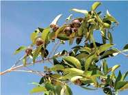

Guaviyú |  |
¿Cuál es su origen?
¿Qué características tiene? | Es un árbol nativo de la región que abarca a Uruguay y parte de Brasil y Argentina. Pertenece a la familia de las mirtáceas, y llega a los 5 m de altura. Es menos precoz que las otras especies y su fruto de color violáceo oscuro llega a unos 2 cm de diámetro. Tiene sabor dulce agradable, y una semilla relativamente grande y dura. |
¿Cuándo y cómo se planta?
| Es preferible manejar las plantas en maceta ya que siempre están con hojas, por lo que los podemos plantar en cualquier época, si bien sufren menos en invierno. |
¿Cómo se cuida? | Son plantas muy adaptadas a nuestras condiciones, por lo que no requieren mayor cuidado. Cerca de la cosecha y durante ésta, debemos cuidarnos de los pájaros ya que la fruta, al igual que en el caso de la pitanga, es muy apetecida por ellos. |
¿Cómo se cosecha? | Se cosecha en febrero-marzo. El color típico de la especie es el principal indicador de madurez; cosechamos cuando desaparece el color verde y se desarrolla el violáceo oscuro. |
¿Cómo se consume? | Los frutos de guaviyú, por sus características organolépticas y su sabor, hacen que sean apetecibles en estado fresco. Son también una excelente materia prima para la preparación de mermeladas y licores. |
¿Qué nos aporta? | Como todos los frutos pigmentados con tonos oscuros, es una fuente natural de compuestos antioxidantes. |
Prestar atención a: | Los pájaros son importantes consumidores de estos frutos por lo que debe recurrirse a sistemas para ahuyentarlos. |